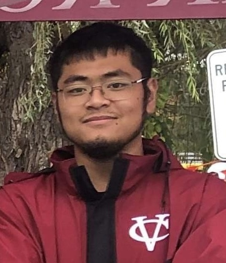

Information
Last updated: 10/9/2022
Hi! I am Michael Yang, a Junior Computer Science major at Vassar College. I went to a technical high school for biotechnology. Throughout my academic career, both college and high school, I held leadership roles and responsibilities that correlated with the roles. During high school, I acted as the treasurer for the biotechnology club where I oversawed all financial transactions and fundraising events. I was also the safety manager where I managed all the safety aspects of chemicals and storage. During my senior year, I volunteered to be a chemistry tutor and teacher assistant for the underclassmen. At Vassar, I am the vice president, and formerly secretary, of the Vassar Chemical Society. Here, I play a pivotal role in transforming the organization from what it was in the past to a far more reaching and influential organization on campus. I am also leading a future project that plans to educate the board members and other students on crystallization by allowing them to physically see and manipulate the crystallization process themselves. As the vice president, I also play an active role with meeting with professors and other campus organizations alongside the president. In June 2019, I had the opportunity to work alongside a postdoctural student with his semiconductor research. I created and prepared silicon samples every day for testing. I also assisted a physics professor with developing a sapphire lens that would later be used in his laser magnifcation project. During this time, I reported our results to other peer researchers and professors. In my free time, I'm usually working on my Dungeons and Dragons campaign or on some of my various web projects or learning languages through Udemy. I taught myself HTML, CSS, JavaScript through Udemy this past summer and by creating and designing projects, it has allowed me to express myself and learn more about web design and construction. Currently, I am trying to finish my projects and host them through GitHub. The projects include this portfolio website, a Dungeons and Dragons compendium, and a text-based choose-your-adventure game. If you want to learn more, my resume and contact information are attached.